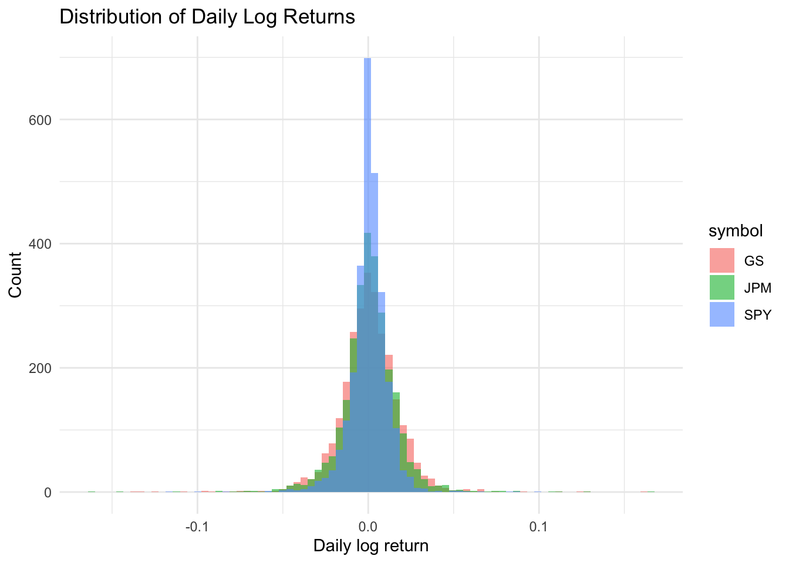
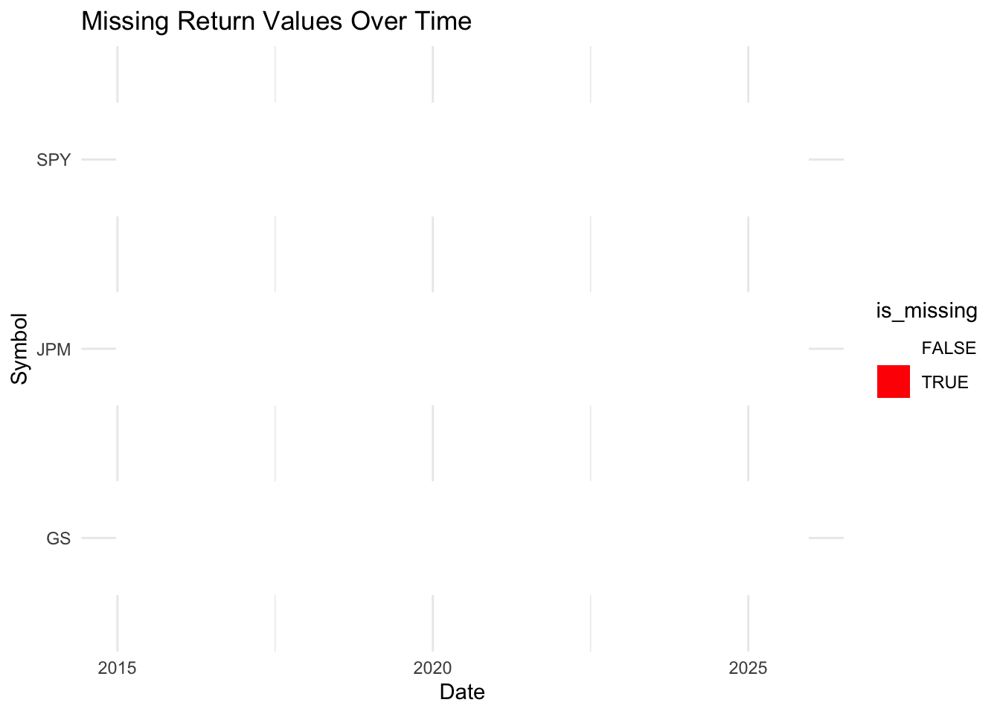

data_search
- Yahoo Finance – JPMorgan Chase (JPM) Daily Prices
- Link: https://finance.yahoo.com/quote/JPM/history
- Data Includes: Open, high, low, close, volume, adjusted close (daily).
- Why Useful: Allows analysis of trends, volatility, drawdowns, and events like COVID or interest rate cycles.
- Yahoo Finance – Goldman Sachs (GS) Daily Prices
- Link: https://finance.yahoo.com/quote/GS/history
- Data Includes: Same structure as JPM (OHLCV + adjusted close).
- Why Useful: Enables head-to-head comparison between JPM and GS for risk/return questions.
- Yahoo Finance – S&P 500 Benchmark (SPY ETF)
- Link: https://finance.yahoo.com/quote/SPY/history
- Data Includes: Market-level daily OHLCV + adjusted close.
- Why Useful: Answers “Do JPM and GS outperform the market after adjusting for volatility?”
- FRED – Federal Funds Effective Rate (FEDFUNDS)
- Link: https://fred.stlouisfed.org/series/FEDFUNDS
- Data Includes: U.S. interest rate policy levels (monthly or daily).
- Why Useful: Connects macro events to bank stock performance, especially interest rate hikes.
- Yahoo Finance – Additional Major Banks (BAC, MS, C)
Bank of America (BAC): https://finance.yahoo.com/quote/BAC/history
Morgan Stanley (MS): https://finance.yahoo.com/quote/MS/history
Citigroup (C): https://finance.yahoo.com/quote/C/history
Data Includes: Daily stock pricing just like JPM and GS.
Why Useful: Allows expansion if my project pivots to a more general banking sector analysis.
Code
returns_daily <- prices_raw %>%
group_by(symbol) %>%
arrange(date, .by_group = TRUE) %>%
mutate(
ret_daily = log(adjusted / lag(adjusted))
) %>%
ungroup()
returns_daily %>%
group_by(symbol) %>%
summarise(
observations = n(),
missing_returns = sum(is.na(ret_daily)),
mean_return = mean(ret_daily, na.rm = TRUE),
sd_return = sd(ret_daily, na.rm = TRUE)
)# A tibble: 3 × 5
symbol observations missing_returns mean_return sd_return
<chr> <int> <int> <dbl> <dbl>
1 GS 2749 1 0.000618 0.0183
2 JPM 2749 1 0.000695 0.0171
3 SPY 2749 1 0.000505 0.01131. Price History (Check for gaps or anomalies)
Code

The price data for JPM, GS, and SPY looks clean and realistic. The trends follow known market events (like the 2020 COVID dip), and there are no gaps, flat spots, or strange jumps. This shows the dataset is complete and consistent across the entire time period.
2. Distribution of Daily Returns (Check volatility + outliers)
Code

The return distributions look normal for financial assets—centered around zero with SPY being the least volatile and JPM/GS showing wider spread. There are no extreme outliers or unusual patterns, which confirms that the return calculations and underlying prices are valid.
3. Missing Values by Year (Check data gaps)
Code
returns_daily %>%
mutate(is_missing = is.na(ret_daily)) %>%
ggplot(aes(date, symbol, fill = is_missing)) +
geom_tile(height = 0.6, width = 20) + # <-- bigger tiles
scale_fill_manual(values = c("FALSE" = "white", "TRUE" = "red")) +
labs(
title = "Missing Return Values Over Time",
x = "Date",
y = "Symbol"
) +
theme_minimal()
Only one missing return appears for each symbol, and it’s the first day (expected because returns need a previous price). After that, there are zero missing values. This confirms that the dataset has no gaps and is reliable for time-series analysis. So YAY this dataset will be ready to use for my final!